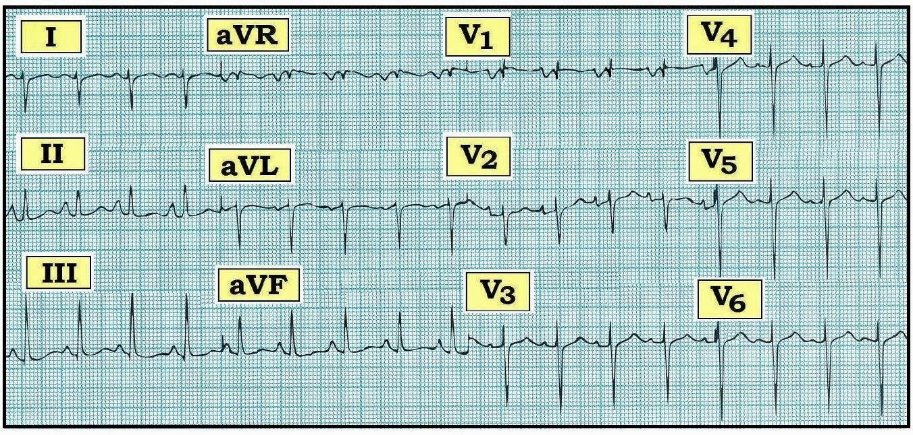
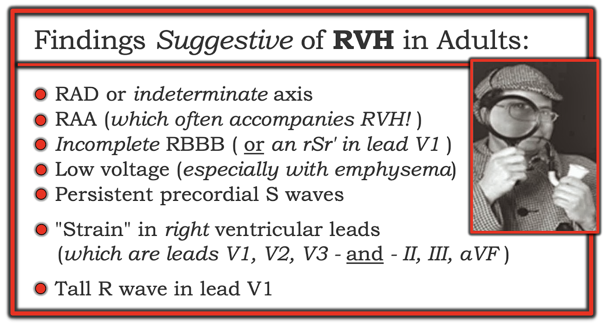
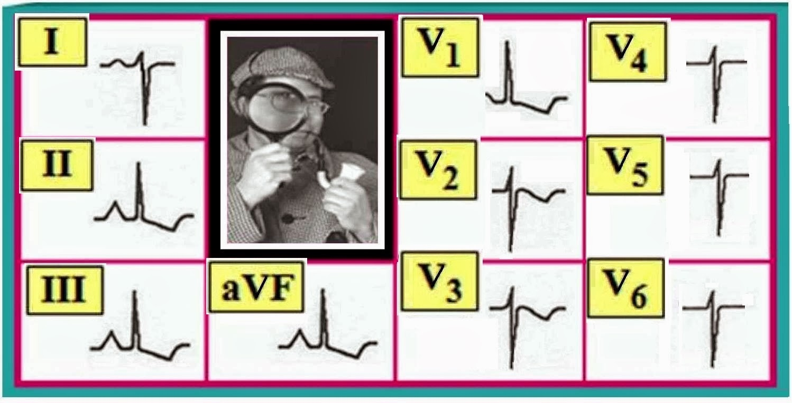
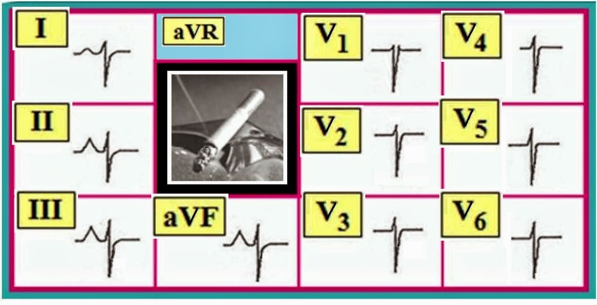
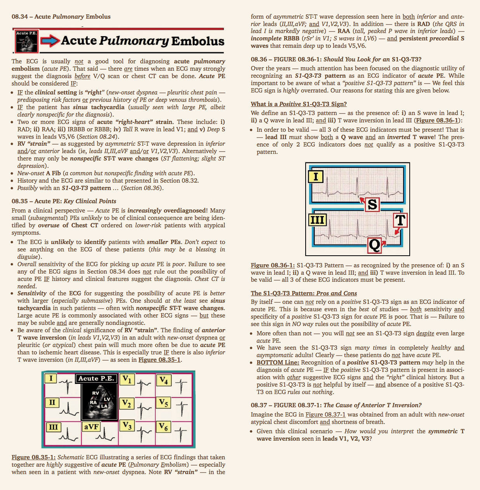
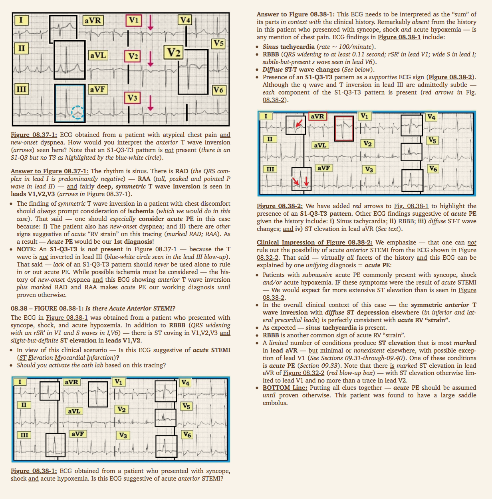

Ôn tập đọc điện tâm đồ – Số 77 (Lớn các buồng tim – RVH – RAE – P phế – COPD)
Điện tâm đồ 12 chuyển đạo dưới đây trong Hình 1 được ghi từ một bệnh nhân khó thở mới khởi phát, được cho là do suy tim sung huyết.
- Bạn còn nghi ngờ điều gì khác?


-----------------------------------------
Diễn giải Hình 1:
Nhịp là nhịp nhanh xoang, tần số ~115/phút. QRS hẹp. Trái với hình ảnh thường gặp của suy tim trái (trong đó người ta chờ đợi thấy LVH kèm tăng gánh) — trên điện tâm đồ này không có dấu hiệu nào của LVH (phì đại thất trái – Left Ventricular Hypertrophy). Thay vào đó — bản ghi gợi ý mạnh mẽ bệnh phổi nặng , nếu không nói là rõ ràng RVH (phì đại thất phải – Right Ventricular Hypertrophy):
- Có RAD rõ rệt (trục lệch phải – Right Axis Deviation) — xác định dựa vào phức bộ QRS chủ yếu âm ở chuyển đạo I, nhưng QRS dương ở aVF.
- Có RAA (bất thường nhĩ phải – Right Atrial Abnormality) (sóng P cao, nhọn, “ngồi lên không thoải mái” ở các chuyển đạo dưới, rõ ràng >2.5mm ở chuyển đạo II).
- Thấy có blốc nhánh phải không hoàn toàn (incomplete RBBB) (rsR’ ở chuyển đạo V1; sóng S ở I,V6).
- Sóng S sâu tồn tại dai dẳng đến tận các chuyển đạo V5,V6.
- Có các bất thường sóng ST‑T không đặc hiệu — dù chưa hẳn là tăng gánh thất phải (RV strain) (và không có thay đổi cấp).
Nhận định điện tâm đồ Hình 1: Sự kết hợp của RAD rõ rệt, RAA chắc chắn, IRBBB và sóng S dai dẳng ở các chuyển đạo trước tim — tất cả đều hướng tới chẩn đoán RVH.
- Nhận định lâm sàng: Điện tâm đồ này buộc ta phải xem xét lại giả thuyết suy tim trái là nguyên nhân chính gây khó thở mới khởi phát của bệnh nhân. Thay vào đó — bệnh phổi lâu năm/nặng nhiều khả năng hơn, dựa trên sự kết hợp các dấu hiệu (có thể thuyên tắc phổi? ).
- Vượt ra ngoài phần cốt lõi: Còn có LAA (bất thường nhĩ trái – Left Atrial Abnormality) — xác định dựa vào thành phần âm rất sâu của sóng P ở chuyển đạo V1. Chưa chắc điều này phản ánh sự lớn nhĩ về giải phẫu hay áp lực nhĩ trái tăng.
------------------------------------------
Lớn các buồng tim: Tiêu chuẩn điện tâm đồ
Trong các bài blog gần đây, chúng tôi đã ôn lại tiêu chuẩn điện tâm đồ của LAA/RAA & LVH:
- ECG Blog #73 — ôn lại LVH.
- ECG Blog #75 — ôn lại lớn các buồng nhĩ.
Mục tiêu của bài blog này là ôn lại tiêu chuẩn điện tâm đồ để chẩn đoán RVH.
------------------------------------------
RVH: Nhận xét chung
Phát hiện lớn thất phải ở người lớn bằng tiêu chuẩn điện tâm đồ thường cực kỳ khó. Đó là vì ở người lớn, LV (thất trái – Left Ventricle) bình thường lớn hơn và dày hơn RV (thất phải – Right Ventricle) rất nhiều — đến mức che lấp cả những mức tăng kích thước buồng thất phải vừa phải. Hệ quả là nhiều bệnh nhân có RVH (Right Ventricular Hypertrophy – phì đại thất phải) sẽ không được phát hiện — NẾU việc đánh giá lớn buồng tim chỉ dựa vào điện tâm đồ (cần siêu âm tim để biết chắc chắn).
- LƯU Ý: Ngược lại với người lớn — chẩn đoán RVH trên điện tâm đồ thường dễ một cách bất ngờ ở trẻ em mắc bệnh tim bẩm sinh (vì kích thước tương đối của RV so với LV không chênh lệch nhiều như ở người lớn).
------------------------------------------
RVH: Tiêu chuẩn điện tâm đồ giản lược
Các tiêu chuẩn điện tâm đồ để chẩn đoán RVH được liệt kê trong Hình 2. Cần nhiều tiêu chuẩn để chẩn đoán chính xác.
- Hãy coi việc chẩn đoán RVH trên điện tâm đồ giống như đưa ra một Chẩn đoán kiểu "Thám tử" . Hiếm khi chỉ một dấu hiệu đơn lẻ đủ để khẳng định chẩn đoán. Thay vào đó — RVH được xác định bằng suy luận (tức là từ việc nhận ra một tổ hợp các dấu hiệu điện tâm đồ liệt kê trong Hình 2):


-------------------------------------------
Lưu ý lâm sàng: Bệnh phổi không kèm RVH rõ ràng thường gặp ở người hút thuốc lâu năm. Tiến triển thành tâm phế mạn (trong đó có RVH rõ ràng) — là giai đoạn tương đối muộn của quá trình bệnh. Tìm kỹ các dấu hiệu điện tâm đồ trong Hình 2 có thể cho manh mối về hoặc bệnh phổi lâu năm và/hoặc RVH đi kèm:
- Hãy nghĩ tới Bệnh phổi — NẾU bạn thấy từ 2 tiêu chuẩn trở lên trong 5 tiêu chuẩn đầu tiên liệt kê ở Hình 2 (đặc biệt nếu bệnh nhân được biết là hút thuốc hoặc có các bệnh phổi khác đã biết).
- Nghi ngờ bệnh phổi kèm RVH — NẾU ngoài ra bạn còn thấy sóng R cao ở chuyển đạo V1 (có hoặc không kèm thay đổi ST-T kiểu “tăng gánh” thất phải ).
- Theo định nghĩa — Khi bạn đã thấy bằng chứng điện tâm đồ rõ ràng của RVH ở người lớn — thì mức độ RVH thường đã rất nặng (bệnh nhân gần như luôn có COPD giai đoạn cuối và/hoặc tăng áp động mạch phổi).
------------------------------------------
HÌNH 2: Ôn lại các tiêu chuẩn RVH cụ thể
Dù không có tiêu chuẩn nào trong Hình 2 tự nó đủ để chẩn đoán RVH — việc thấy nhiều tiêu chuẩn trên cùng một bản ghi thực sự rất gợi ý RVH — đặc biệt khi gặp trong bối cảnh lâm sàng phù hợp (tức là COPD, hen phế quản lâu năm, suy tim phải, tăng áp động mạch phổi).
- RAD (trục lệch phải – Right Axis Deviation) — rất gợi ý RVH khi đi kèm các tiêu chuẩn khác liệt kê trong Hình 2. Rất ít bệnh lý khác gây ra RAD. Vì vậy, sự hiện diện của RAD rõ rệt ở Hình 1 gần như khẳng định chẩn đoán RVH.
- Trục không xác định — Thay đổi thể tích phổi trong khí phế thũng thường làm trục lệch về bên phải và ra phía sau. Hệ quả là — biên độ QRS thực ở cả chuyển đạo I lẫn aVF đều âm. NẾU bạn thấy trục không xác định — Hãy nghĩ tới RVH – COPD – thể trạng to lớn.
- RAA (bất thường nhĩ phải – Right Atrial Abnormality) — Sóng P cao, nhọn (peaked), đỉnh sắc (pointed) của RAA dễ nhận ra (Hình 1). Chỉ một bệnh lý gây RAA mà không có RVH (= hẹp van ba lá). Do đó — thấy RAA là một dấu hiệu gián tiếp cho thấy RVH rất có khả năng (Xem ECG Blog #75 — để biết thêm về chẩn đoán RAA trên điện tâm đồ).
- IRBBB (rSr’ ở V1) — Sự hiện diện của r’ (r phẩy) ở chuyển đạo V1 gợi ý hoạt động điện cuối hướng về bên phải. Tuy tự thân dấu hiệu điện tâm đồ này lành tính và thường gặp như một dấu hiệu đơn độc ở người khỏe mạnh — nó ủng hộ chẩn đoán bệnh phổi/có thể RVH nếu đi kèm các dấu hiệu khác liệt kê trong Hình 2.
- Sóng S dai dẳng — Biên độ sóng R bình thường tăng dần khi đi qua các chuyển đạo trước tim (khi hoạt động điện di chuyển sang trái, nơi có LV lớn hơn). Biên độ sóng R thường đạt đỉnh (cao nhất) ở V4 hoặc V5 — rồi giảm dần (ở V5,V6). Bình thường hoàn toàn không có sóng S ở V5,V6 — vì tới thời điểm này của quá trình khử cực, mọi hoạt động điện đều đi về bên trái. NẾU sóng S lớn hơn mức rất nhỏ vẫn còn ở V5,V6 — điều này hàm ý có hoạt động điện hướng phải đáng kể (Hãy nghĩ tới RVH – COPD – thể trạng to lớn).
- Điện thế thấp — Không khí không phải là chất dẫn điện tốt. Lồng ngực khí phế thũng to của bệnh nhân COPD làm giảm (làm nhỏ đi) điện thế.
- Về mặt kỹ thuật — “điện thế thấp” được định nghĩa là biên độ QRS ≤5 mm (tức là ≤1 ô lớn) ở cả 6 chuyển đạo chi (I,II,III,aVR,aVL,aVF). Dù vậy — chúng tôi cũng dùng “điện thế thấp” như một thuật ngữ tương đối khi biên độ QRS tổng thể theo cảm nhận chủ quan có vẻ giảm. Khi bạn thấy “điện thế thấp” — Hãy nghĩ tới COPD. LƯU Ý: Điện thế thấp cũng có thể gặp trong suy giáp; béo phì; tràn khí màng phổi; tràn dịch màng ngoài tim; và như một biến thể bình thường. Dù vậy — điện thế thấp không quá thường gặp, nên sự hiện diện của nó phải khiến bạn cân nhắc khả năng bệnh phổi.
- R cao ở chuyển đạo V1 — Chuyển đạo V1 là chuyển đạo phía phải. Vì vậy phức bộ QRS bình thường âm ở V1 (hoạt động điện đi về phía LV lớn hơn và ra xa V1). NẾU sóng R cao hơn sóng S ở chuyển đạo V1 — điều này nghĩa là các lực hướng phải tăng (có thể là một dấu hiệu quan trọng của RVH). Trên lâm sàng — khi đã thấy sóng R cao ở chuyển đạo V1 ở người lớn mắc bệnh phổi — thì mức độ RVH thường đã rất nặng (tức là bệnh nhân nhiều khả năng có COPD giai đoạn cuối và/hoặc tăng áp động mạch phổi). — ECG Blog #81 ôn lại các nguyên nhân khác có thể gây R cao ở V1 —
- “Tăng gánh” thất phải (RV strain) — Cũng như “tăng gánh” thất trái là dấu hiệu của LVH thực sự — việc thấy “tăng gánh” ở các chuyển đạo phía phải (II,III,aVF — hoặc — V1,V2,V3) ủng hộ mạnh mẽ chẩn đoán RVH.
------------------------------------------
Sơ đồ HÌNH 3: Ví dụ về RVH + “tăng gánh” thất phải (RV strain)
Phần lớn các tiêu chuẩn điện tâm đồ của RVH mà chúng tôi liệt kê trong Hình 2 đều có mặt trong Hình 3 dạng sơ đồ. Cụ thể — Ta thấy RAD; RAA; sóng R cao ở V1; và sóng S sâu ở V5,V6.
- Cũng lưu ý có "tăng gánh thất phải" (thường thấy ở các chuyển đạo dưới và/hoặc các chuyển đạo trước — cả hai đều có ở đây).
- ĐIỂM THEN CHỐT (PEARL): Các thay đổi sóng ST-T ở chuyển đạo dưới và/hoặc trước như trong Hình 3 thường không do thiếu máu cục bộ — mà là do RVH hoặc thuyên tắc phổi.


------------------------------------------
Sơ đồ HÌNH 4: Ví dụ về Bệnh “phổi”
Bệnh phổi (như COPD) đôi khi có thể được gợi ý trên điện tâm đồ. Cụ thể — chúng tôi tìm sự hiện diện của ít nhất 2 trong 5 dấu hiệu đầu tiên của Hình 2. Khái niệm này được minh họa rõ trong Hình 4 dạng sơ đồ. Không thấy điện thế thấp — nhưng có 4 trong 5 tiêu chuẩn đầu tiên của Hình 2! Lưu ý:
- Trục không xác định (QRS âm ở chuyển đạo I và aVF).
- RAA (sóng P cao, nhọn ở các chuyển đạo dưới).
- rSr’ ở chuyển đạo V1.
- Sóng S dai dẳng suốt các chuyển đạo trước tim.


------------------------------------------
Quay lại HÌNH 1: Có RVH không?
Quay lại điện tâm đồ chúng tôi trình bày ban đầu ở Hình 1. Giờ đây rõ ràng là RVH hiện diện chắc chắn. Cụ thể — Ta thấy RAD rõ rệt; RAA; IRBBB (nếu không nói là sóng r’ cao hơn mức dự kiến ở V1); và sóng S sâu dai dẳng ở V5,V6.
- Nhận ra rằng điện tâm đồ của bệnh nhân này cho thấy RVH chứ không phải LVH gợi ý tâm phế mạn (nếu không phải là thuyên tắc phổi) là nguyên nhân gây khó thở cấp. Điều trị rất khác so với suy tim trái.
-------------------------------------
- Để biết thêm thông tin — TRUY CẬP:
- Xem thêm ECG Blog #73 — để ôn lại tiêu chuẩn LVH -
- Xem ECG Blog #75 — để ôn lại tiêu chuẩn RAA/LAA -
- Để ôn lại các nguyên nhân gây sóng R cao ở V1 — Xem ECG Blog #81 -
-------------------------------------
PHẦN BỔ SUNG: Các phần sau đây được trích từ ECG-2014-ePub của chúng tôi. Các trang này tóm tắt dấu hiệu điện tâm đồ của PE cấp (thuyên tắc phổi – Pulmonary Embolus).


--------------------------

